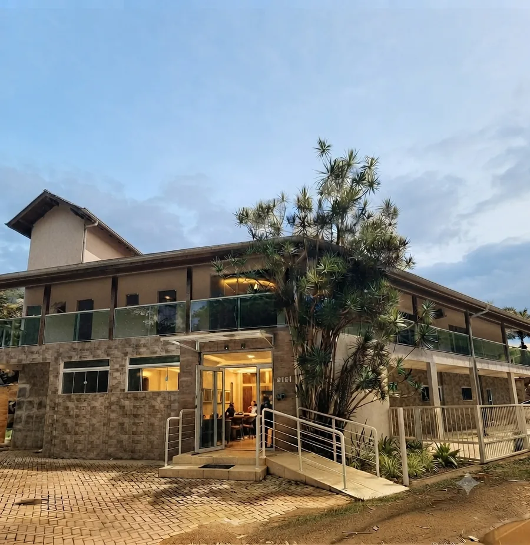
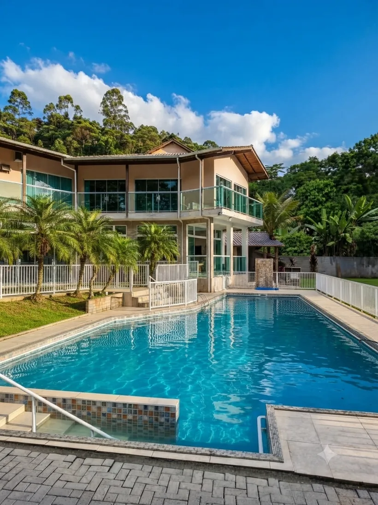
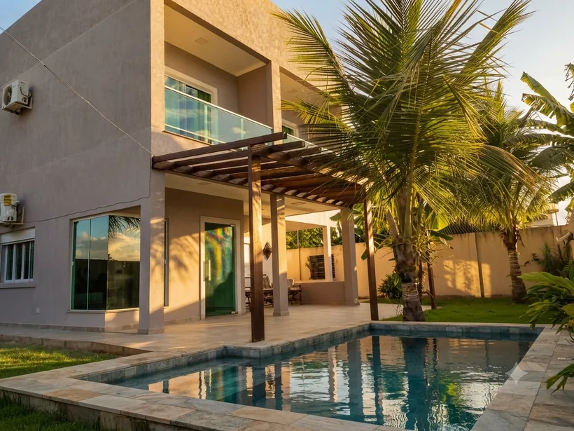

Atendimento 24h
Equipe de pronto atendimento e regulação médica disponíveis a qualquer hora do dia ou da noite.
Atendimento online 24 horas para internação em dependência química e alcoolismo. Unidades de alto padrão com infraestrutura hospitalar de excelência e equipe multidisciplinar completa.
Linha de Apoio Ativa: Atendimento Imediato e Sigiloso
Oferecemos suporte integral, seguro e de alto nível para garantir o sucesso no processo de reabilitação.
Equipe de pronto atendimento e regulação médica disponíveis a qualquer hora do dia ou da noite.
Corpo clínico composto por psiquiatras, psicólogos, terapeutas, enfermeiros e nutricionistas dedicados.
Instalações acolhedoras que reúnem o conforto de uma residência e a segurança de um ambiente hospitalar.
Garantia absoluta de privacidade e confidencialidade em todas as etapas do acolhimento e tratamento.
A rede Recomeço à Vitória nasceu com o propósito de redefinir o tratamento para dependência química no Brasil. Oferecemos um ambiente terapêutico altamente qualificado, focado no resgate da dignidade e integridade física e emocional de cada paciente.
Aliando ciência, medicina de ponta e profundo acolhimento humanizado, desenvolvemos metodologias personalizadas que envolvem não apenas o paciente, mas toda a sua estrutura familiar no processo de cura.

Protocolos embasados cientificamente e adequados ao estágio de cada indivíduo.
Acolhimento humanizado para pacientes que reconhecem a necessidade de ajuda e buscam ativamente a reabilitação.
Realizada conforme previsão legal (Lei 13.840), voltada para a preservação da vida do paciente que perdeu a capacidade de decisão.
Acompanhamento médico contínuo e farmacológico na primeira fase, amenizando os sintomas da abstinência de forma segura.
Abordagem multidisciplinar focada nas especificidades físicas e comportamentais da dependência do álcool.
Terapia cognitivo-comportamental aplicada de forma intensiva para o tratamento contra diversas substâncias psicoativas.
Prevenção à recaída e reinserção social assistida, garantindo que o paciente mantenha a sobriedade no retorno ao lar.
Profissionais qualificados atuando em sinergia para proporcionar o melhor plano de recuperação.

Psiquiatra
CRM 27373 | RQE 44651

Psicólogo & Psicanalista
CRP 07301649

Enfermeira
COREN 189698 ENF

Nutricionista
Sócio Proprietário

Assistente Social
CRESS: 11641 — Recuperação social e fortalecimento psicológico durante a internação.
Equipe de Enfermagem
Monitoramento contínuo dos parâmetros de saúde e administração segura de medicações.
Ambientes projetados para unir a tranquilidade restauradora do verde e o suporte médico-hospitalar de alto padrão.



A verdadeira vitória se reflete nas histórias de transformação e nas famílias reestruturadas.
"A internação involuntária do meu filho foi a decisão mais difícil da minha vida, mas a equipe do Recomeço à Vitória nos acolheu com uma humanidade e competência técnica incríveis. Hoje ele está recuperado e trabalhando conosco novamente. Eternamente grata."
"Buscamos a clínica em um momento de total desespero. O acompanhamento psiquiátrico de alto padrão e o ambiente calmo foram fundamentais na reabilitação do meu marido. O respeito ao paciente é absoluto."
Nossa equipe de acolhimento e regulação médica está disponível agora mesmo para sanar dúvidas sobre custos, cobertura de convênios, formas de internação voluntária e involuntária e logística de remoção.
Fale com a Coordenação 24h (54) 99674-1966